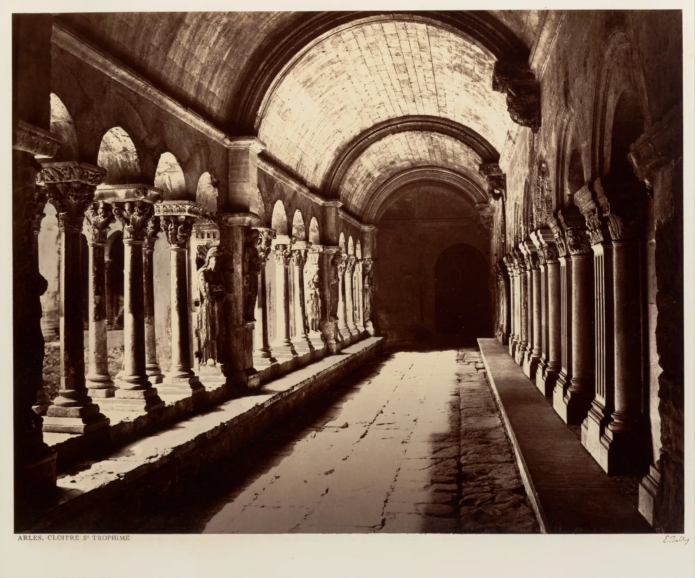

초점거리와 화각
좁은 가게 안에서 사진을 찍어 본 사람은 안다. 서가 앞에 서서 카메라를 들면 책 몇 권만 보이고, 한 걸음 물러서려 하면 등 뒤에 이미 반대편 서가가 있다. 그때 휴대폰의 "0.5×"를 누르면 갑자기 서가 전체가 들어온다. 무엇이 바뀐 것일까. 이 장은 렌즈에 적힌 숫자 하나, 초점거리가 장면을 얼마나 크게, 얼마나 넓게 옮기는지 따라간다. 같은 "18 mm"가 카메라마다 다른 넓이를 담는 까닭(센서 크기)과, 휴대폰의 줌 단추가 실제로 하는 일도 함께 본다.
- 초점거리가 상의 크기를 정한다는 것을 바늘구멍 카메라의 닮은 삼각형으로 설명한다.
- 센서 크기와 초점거리로 화각을 계산하고, 주어진 자리에서 담기는 폭을 구한다.
- 센서 크기가 다른 카메라를 환산 초점거리로 비교하고, 환산이 같게 하는 것과 같게 하지 않는 것을 구별한다.
- 휴대폰의 0.5×·1×·2×가 서로 다른 렌즈인지, 잘라 낸 것인지 구별하고 디지털 줌의 대가를 안다.
- 좁은 실내에서 담고 싶은 범위와 물러설 수 있는 거리로 초점거리를 고른다.
물러설 자리가 없는 서점
책방 E 1층 안쪽에는 폭 1.1 m 남짓한 통로가 있고, 양쪽으로 높이 2.1 m의 서가가 90 cm 칸 여섯 개씩 이어진다(DrawingBook 4장에서 서윤이 그린 바로 그 통로다). 이 통로에서 한쪽 서가를 정면으로 찍으려면 카메라는 반대편 서가에 등을 붙인 자리, 서가 면에서 0.9 m쯤 떨어진 곳에 있을 수밖에 없다. 거기서 담기는 폭과 높이는 무엇이 정할까.
그림 속 숫자들은 세 가지에서 나온다. 렌즈의 초점거리, 상이 맺히는 센서의 크기, 그리고 피사체까지의 거리다. 앞의 둘이 화각이라는 부채꼴의 벌어진 각도를 정하고, 거리는 그 부채꼴이 피사체에 닿았을 때의 폭을 정한다. 거리는 다음 장의 주제이기도 하다. 이 장에서는 카메라를 한 자리에 두었을 때 렌즈와 센서가 정하는 것에 집중한다.
초점거리: 바늘구멍에서 렌즈까지
렌즈 없이도 사진기를 만들 수 있다. 상자 한쪽에 바늘구멍을 뚫으면, 반대쪽 면에 바깥 장면이 거꾸로 맺힌다. 이것이 바늘구멍 카메라(Pinhole camera), 곧 아주 작은 구멍 하나로 빛줄기를 골라 상을 만드는 상자다. 물체의 꼭대기에서 온 빛은 구멍을 지나 아래쪽에, 바닥에서 온 빛은 위쪽에 닿는다. 구멍을 꼭짓점으로 하는 두 삼각형, 바깥의 큰 삼각형(물체)과 상자 안의 작은 삼각형(상)은 닮은꼴이다.
렌즈는 바늘구멍보다 훨씬 많은 빛을 모아 같은 자리에 상을 맺게 하는 장치다. 멀리 있는 물체에 초점을 맞춘 렌즈는 바늘구멍을 렌즈의 중심에 두고 센서를 그 뒤 초점거리(Focal length)만큼에 둔 것과 같은 기하를 만든다. 초점거리는 평행하게 들어온 빛이 한 점으로 모이는 거리이고, 렌즈 경통에 적힌 "18–55 mm", "50 mm"가 이 값이다. 식을 읽으면 초점거리가 두 배가 되면 상도 두 배로 커진다. 망원 렌즈가 멀리 있는 것을 크게 보여 주는 까닭은 이것뿐이다.
아래에서 직접 해 본다. 오른쪽의 서가(높이 2.1 m)를 끌어 거리를 바꾸고, 슬라이더로 초점거리를 바꾼다. 왼쪽의 회색 막대는 센서다. 빛줄기의 각도는 실제와 같게 그렸고, 렌즈 앞과 뒤의 길이 축척만 다르다.
초점거리와 상의 크기
센서는 상을 받는 창문이다. 상이 창문보다 크면 넘친 부분은 사진에 들어오지 않는다. 그래서 같은 거리에서 "얼마나 많이 담기느냐"는 초점거리 하나로 정해지지 않고, 초점거리와 센서 크기의 비로 정해진다. 휴대폰의 렌즈는 초점거리가 몇 mm에 불과하지만 센서도 그만큼 작아서, 결과는 미러리스의 18 mm와 비슷한 넓이가 된다.

화각: 초점거리가 정하는 부채꼴
센서의 한 변을 \(d\)라고 하면, 그 변의 양 끝에 닿는 빛줄기 두 개가 렌즈 중심에서 이루는 각이 그 방향의 화각(Angle of view)이다. 사진에 담기는 장면의 각도 범위라는 뜻이다. 앞 식에서 \(h = d\)로 놓고 각도로 풀면 된다.
뒤의 꼴 \(W = D\,d/f\)가 현장에서 더 쓸모 있다. 서윤의 미러리스는 이 책의 계산에서 APS-C 센서를 24 × 16 mm로 둔다(실제 기종은 23.5 × 15.6 mm 안팎이다). 카메라를 세로로 들면 가로 방향이 16 mm다. 18 mm 렌즈로 0.9 m 앞의 서가를 겨누면 폭 \(0.9 \times 16 / 18 = 0.8\) m, 높이 \(0.9 \times 24 / 18 = 1.2\) m가 담긴다. 그림 1의 숫자다.
| 카메라 · 렌즈 | 초점거리 | 가로 화각 | 세로 화각 | 대각 화각 |
|---|---|---|---|---|
| 미러리스(24 × 16 mm) · 줌 가장 넓게 | 18 mm | 67.4° | 47.9° | 77.4° |
| 미러리스 · 줌 가장 길게 | 55 mm | 24.6° | 16.6° | 29.4° |
| 미러리스 · 단렌즈 | 50 mm | 27.0° | 18.2° | 32.2° |
| 휴대폰 기본 카메라(8 × 6 mm, 이 책의 모형) | 6.0 mm | 67.4° | 53.1° | 79.6° |
| 휴대폰 초광각(5.6 × 4.2 mm, 이 책의 모형) | 2.1 mm | 106.3° | 90.0° | 118.1° |
표의 휴대폰 값은 흔한 기종을 닮게 이 책이 정한 모형이다. 기종마다 센서와 렌즈가 다르지만 비율은 비슷하다. 흥미로운 줄은 첫째와 넷째다. 미러리스의 18 mm와 휴대폰 기본 카메라의 6 mm는 가로 화각이 똑같이 67.4°다(\(24/18 = 8/6\)). 서윤이 "미러리스로 찍으면 더 넓게 나오겠지" 하고 18 mm를 들고 왔지만, 담기는 넓이는 휴대폰의 1×와 거의 같았던 것이다.
아래 평면도에서 화각의 부채꼴을 통로에 직접 대 본다. 흰 손잡이로 카메라를 옮기고, 작은 손잡이로 겨누는 방향을 돌린다. 부채꼴 안에서 카메라가 볼 수 있는 서가 면은 굵게 칠해진다.
평면도 위의 화각
평면도에서 분명해지는 것이 하나 있다. 화각은 각도라서, 담기는 폭은 거리에 비례해 커진다. 통로 안에서는 거리가 0.9 m로 묶여 있으니 화각을 넓히는 수밖에 없지만, 통로를 길이 방향으로 겨누면 같은 화각으로도 몇 m의 서가가 들어온다. 서가 면이 비스듬히 누우니 책등은 정면에서보다 좁게 보이는 대가가 있다. 좁은 공간에서 사진가들이 흔히 공간의 긴 축을 따라 찍는 까닭이다.
센서 크기와 환산 초점거리
같은 렌즈를 크기가 다른 센서 앞에 두면 어떻게 될까. 렌즈는 둥근 상(이미지 서클)을 맺고, 센서는 그 가운데를 사각형으로 잘라 받는다. 센서가 작으면 가운데만 받으니 장면이 좁게, 곧 더 망원처럼 찍힌다.
센서마다 초점거리의 뜻이 달라지니, 사진가들은 화각을 하나의 잣대로 말하려고 필름 시대의 표준이던 35 mm 필름 한 칸(36 × 24 mm, 오늘날 "풀프레임")을 기준으로 삼는다. 환산 초점거리(35 mm equivalent focal length)는 그 센서와 같은 화각을 풀프레임에서 얻으려면 필요한 초점거리다. 계산은 대각선의 비, 곧 크롭 배율(Crop factor)을 곱하면 된다. 서윤의 APS-C 미러리스는 1.5배라서 18–55 mm 줌은 환산 27–82.5 mm, 50 mm 단렌즈는 환산 75 mm다. 휴대폰 기본 카메라의 6 mm는 4.33배로 환산 26 mm, 초광각 2.1 mm는 6.18배로 환산 13 mm가 된다.
아래 그림은 한 렌즈가 맺는 상 위에 세 센서를 겹쳐 놓았다. 통로 입구에서 2 m 떨어져 통로를 겨눈 장면이다. 슬라이더로 초점거리를 바꾸고, "센서 크기로 잘라 보기"를 켜면 고른 센서가 받는 부분만 화면 가득 키워 보여 준다.
같은 렌즈, 다른 센서
휴대폰의 0.5×, 1×, 2×
휴대폰 카메라 앱의 줌 단추는 대개 기본 카메라의 환산 초점거리를 1×로 놓은 배율이다. 서윤의 휴대폰(이 책의 모형)이라면 1×가 환산 26 mm다. 그런데 이 단추들은 같은 종류의 일을 하지 않는다.
| 단추 | 환산 | 실제로 하는 일 | 대가 |
|---|---|---|---|
| 0.5× | 13 mm | 다른 카메라(초광각 렌즈 + 더 작은 센서)로 바꾼다 | 센서가 작아 어두운 곳에서 거칠다. 가장자리 물체가 늘어나 보인다(6장) |
| 1× | 26 mm | 기본 카메라 | 가장 큰 센서, 가장 밝은 렌즈인 경우가 많다 |
| 2× | 52 mm | 망원 렌즈가 없는 기종에서는 기본 카메라 화면의 가운데를 잘라 키운다 | 가로·세로 각각 절반, 화소는 4분의 1만 남는다 |
| 망원 카메라가 있으면 | 기종마다 | 또 다른 카메라(긴 렌즈)로 바꾼다 | 센서가 작은 경우가 많고, 빛이 적으면 기본 카메라 크롭으로 대신하기도 한다 |
잘라서 키우는 줌을 디지털 줌(Digital zoom), 렌즈가 상 자체를 크게 맺는 줌을 광학 줌(Optical zoom)이라 한다. 둘은 같은 자리에서 찍는 한 담기는 범위와 원근이 똑같다. 다른 것은 그 범위를 몇 개의 화소로 받느냐다. 아래에서 비교한다. 왼쪽은 1× 화면의 가운데를 잘라 키운 것, 오른쪽은 처음부터 긴 렌즈로 받은 것이다. 화소 수의 차이가 눈에 보이도록 센서의 화소를 실제보다 훨씬 적게 흉내 냈다.
잘라 키우기와 광학 줌
디지털 줌은 나쁜 것이 아니라 나중에 해도 되는 일이다. 찍을 때 자르든 보정할 때 자르든 결과는 같고, 원본을 남겨 두면 나중에 다른 범위를 고를 수도 있다. 반대로 0.5×처럼 처음부터 더 넓게 담는 일은 나중에 할 수 없다. 사진에 들어오지 않은 것은 어떤 보정으로도 되살릴 수 없다.
광각과 망원의 실제 차이
초점거리를 이름으로 나누는 관습이 있다. 풀프레임 환산으로 대략 35 mm보다 짧으면 광각(Wide-angle), 40~60 mm 안팎이면 표준(Normal), 70 mm보다 길면 망원(Telephoto)이라고 부른다. 경계는 책마다 조금씩 다르다. 표준 렌즈는 흔히 센서 대각선 길이(풀프레임 43 mm)와 비슷한 초점거리로 설명하는데, 이것은 관습이지 사람 눈의 시야와 같다는 뜻은 아니다. 사람의 두 눈은 좌우 180° 가까이를 보지만, 또렷하게 보는 범위는 그보다 훨씬 좁고 시선을 따라 계속 옮겨 다닌다.
같은 자리에서 광각에서 망원으로 줌을 돌리면 무슨 일이 일어날까. 앞의 두 시뮬레이터가 이미 답을 보여 주었다. 센서를 작게 하는 것, 화면 가운데를 잘라 키우는 것, 줌을 당기는 것은 같은 자리에서는 모두 같은 일, 곧 담는 범위를 좁히는 일이다. 가까운 것과 먼 것의 크기 비, 선이 모이는 각도, 서가가 비스듬히 누운 정도는 그대로다. 사람들이 "광각은 과장하고 망원은 납작하게 누른다"고 느끼는 차이는 렌즈가 아니라 그 렌즈를 쓸 때 우리가 서는 거리에서 온다. 이것이 다음 장의 주제다.
규칙이 깨지는 경우도 있다. 망원은 멀리 있는 것을 당기는 렌즈라고만 생각하면, 좁은 실내에서 망원을 쓸 일은 없어 보인다. 하지만 서가 한 칸의 책등이나 손님의 손에 들린 책 한 권처럼 작은 부분을 화면 가득 담을 때, 다가가기 어렵거나 다가가면 그림자가 지는 경우에는 50 mm(환산 75 mm) 같은 렌즈가 오히려 편하다. 화각의 선택은 "넓을수록 좋다"가 아니라 "무엇을 화면에 남기고 무엇을 밖으로 내보낼 것인가"의 문제다.
회랑을 한 장에 담은 사진가
좁고 긴 공간을 한 장에 담는 문제는 사진만큼 오래되었다. 19세기 프랑스의 사진가 에두아르 발뒤스는 정부의 의뢰로 프랑스 곳곳의 옛 건축물을 커다란 유리판과 종이 음화에 기록했다. 아래 사진은 아를의 생트로핀 성당 회랑이다.

이 사진에서 두 가지를 본다. 첫째, 공간의 긴 축을 따라 찍으면 화각이 아주 넓지 않아도 공간 전체가 담긴다. 둘째, 그 대가로 벽면의 장식은 비스듬히 누워 하나하나 자세히 보이지 않는다. 회랑의 기둥머리 조각을 기록하려면 다시 다가가 다른 사진을 찍어야 한다. 한 장으로 공간을, 여러 장으로 세부를 남기는 것이다. 이 사진처럼 프레임을 정할 때 무엇을 들이고 무엇을 내보낼지는 CompositionBook의 프레임 장에서 더 다룬다.
그림 2의 뒤러 장치와 그림 4의 회랑 사진은 400년 가까이 떨어져 있지만 같은 기하 위에 있다. 한 점(눈, 렌즈의 중심)에서 뻗은 빛줄기를 평면으로 끊는다는 것이다. 투시 원근법을 손으로 그리는 법은 DrawingBook 4장에, 그 원리를 사진기에서 다시 만나는 이야기는 6장에 이어진다.
작업실: 좁은 실내에서
종이 뷰파인더는 한 번 만들어 두면 렌즈 없이 화각을 연습하는 도구가 된다. 사진가들이 "줌은 발로 하라"고 말하는 것도 같은 뜻이다. 줌 링을 돌리기 전에 몇 걸음 움직여 보면, 같은 화각으로도 전혀 다른 사진이 나온다. 그 "다른 사진"이 무엇인지는 다음 장에서 본다.
종합: 서점 촬영 계획기
이제 모든 것을 한 화면에 모은다. 왼쪽(좁은 화면에서는 위쪽)은 통로의 평면도, 오른쪽은 그 자리에서 고른 카메라로 찍힌 장면이다. 평면도의 흰 손잡이로 카메라를 옮기고 작은 손잡이로 방향을 돌린다. 목표를 고르면 그 목표가 프레임에 들어오는지 판정한다.
서점 촬영 계획기
계획기를 돌려 보면 정답이 하나가 아니라는 것을 알게 된다. 같은 "통로 전체"도 가로로 2.4 m 물러서서 찍을 수 있고, 세로로 2 m에서 찍을 수도 있다. 서가 정면은 휴대폰 초광각만 담을 수 있지만, 그 대신 서가 면과 카메라를 정확히 나란하게 맞춰야 한다. 무엇을 고를지는 사진이 어디에 쓰일지, 그리고 서점을 실제와 얼마나 같게 보여 줄지에 달려 있다.
서윤의 촬영 노트
18 mm는 생각보다 넓지 않았다
12월 둘째 주, 서윤은 오래된 미러리스에 18–55 mm 줌을 끼우고 책방 E의 안쪽 통로에 섰다. 웹사이트의 "서가" 사진으로 주인이 아끼는 오른쪽 서가, 동네 작가 책이 꽂힌 칸을 정면으로 찍을 생각이었다. 반대편 서가에 등을 붙이고 줌을 가장 넓은 18 mm로 돌렸는데도 뷰파인더에는 책 두 단 남짓만 보였다. 세로로 들어도 마찬가지였다. 이 장의 계산으로는 서가 면까지 0.9 m에서 18 mm(세로)가 담는 범위는 폭 0.8 m, 높이 1.2 m다. 높이 2.1 m 서가의 6할이 채 안 되고, 90 cm 칸 하나의 폭도 다 들어오지 않는다.
휴대폰을 꺼내 보니 1×도 비슷했다. 이 책의 모형으로 휴대폰 기본 카메라는 환산 26 mm, 미러리스의 18 mm는 환산 27 mm라 화각이 거의 같다. 0.5×(환산 13 mm)를 누르자 비로소 서가가 위아래로 다 들어왔다. 같은 자리에서 세로로 들면 폭 1.8 m, 높이 2.4 m. 90 cm 칸 두 개와 서가 전체 높이가 들어오는 범위다. 도경은 화면을 보며 물었다. "넓게 담는 건 좋은데, 가게가 실제보다 넓어 보이진 않니?" 서윤은 정면으로 나란히 겨눈 평평한 서가 면은 초광각으로도 비례가 그대로라는 것을 확인했다. 대신 화면 가장자리에 걸린 손님용 의자는 길게 늘어났다.
통로 전체를 담는 사진은 다른 자리에서 찍었다. 통로 입구 앞으로는 2.5 m 남짓 비어 있다. 18 mm를 세로로 들면 입구에서 1.9 m(모형 값 1.91 m), 가로로 들면 2.4 m(2.36 m) 물러설 때 양쪽 서가 끝과 서가 높이 전체가 들어온다. 둘 다 그 빈 공간 안이다. 서윤은 이 계산을 확인하려고 휴대폰 1×로도 같은 자리를 찍어 보았는데, 1×는 세로 1.7 m, 가로 2.1 m에서 들어왔다. 화각이 거의 같으니 당연한 결과였다. 책등을 크게 담는 사진에는 50 mm 단렌즈(환산 75 mm)를 쓰기로 했다. 2×(디지털 줌)는 화소가 4분의 1로 줄어 쓰지 않는다. 대신 다가간다.
| 사진 | 카메라 · 초점거리(환산) | 자리 | 담기는 범위(모형 계산) |
|---|---|---|---|
| 통로 전체 | 미러리스 18 mm (27 mm) | 입구 밖 세로 1.9 m · 가로 2.4 m | 서가 끝 폭 1.7 m, 높이 2.1 m 모두 |
| 서가 정면 두 칸 | 휴대폰 0.5× (13 mm), 세로 | 통로 안, 서가 면에서 0.9 m | 폭 1.8 m × 높이 2.4 m |
| 책등 세부 | 미러리스 50 mm (75 mm), 세로 | 통로 안, 서가 면에서 0.9 m | 폭 0.29 m × 높이 0.43 m(책 일곱 권 남짓) |
핵심 정리
- 초점거리는 상의 크기를 정한다. 얇은 렌즈 근사에서 상의 높이는 \(h = fH/D\)이고, 초점거리가 두 배면 상도 두 배다.
- 화각은 센서의 크기와 초점거리의 비로 정해진다. \(\theta = 2\arctan(d/2f)\), 거리 \(D\)에서 담기는 폭은 \(D\,d/f\)다.
- 센서가 작으면 같은 렌즈도 가운데만 받아 좁게 찍힌다. 환산 초점거리(풀프레임 기준)는 실제 초점거리에 크롭 배율(대각선의 비)을 곱한 값이다. APS-C는 1.5배다.
- 환산은 화각과 원근만 같게 한다. 심도와 노이즈는 센서 크기에 따라 따로 달라진다.
- 휴대폰의 0.5×와 1×는 보통 서로 다른 카메라이고, 망원 렌즈가 없는 기종의 2×는 가운데를 잘라 키운 디지털 줌이다. 같은 자리에서는 범위와 원근이 같고 화소 수만 줄어든다.
- 좁은 실내에서는 먼저 가장 멀리 물러설 자리와 공간의 긴 축을 찾고, 그다음 담을 범위가 들어오는 가장 긴 초점거리를 고른다.
확인 퀴즈
1. APS-C 카메라(크롭 1.5배)에 35 mm 렌즈를 달았다. 풀프레임 카메라로 같은 화각을 얻으려면 어떤 렌즈가 필요한가?
2. 세로로 든 APS-C 카메라(가로 방향 16 mm)에 18 mm 렌즈를 달고 1.8 m 앞의 벽을 정면으로 찍는다. 담기는 벽의 폭은 대략 얼마인가?
3. 망원 카메라가 없는 휴대폰으로 같은 자리에서 1×로 찍어 가운데를 반으로 자른 사진과, 2×로 찍은 사진을 비교했다. 맞는 설명은?
4. 폭이 좁고 긴 회랑 전체를 한 장에 담고 싶은데 초광각 렌즈가 없다. 이 장의 내용으로 가장 알맞은 방법은?